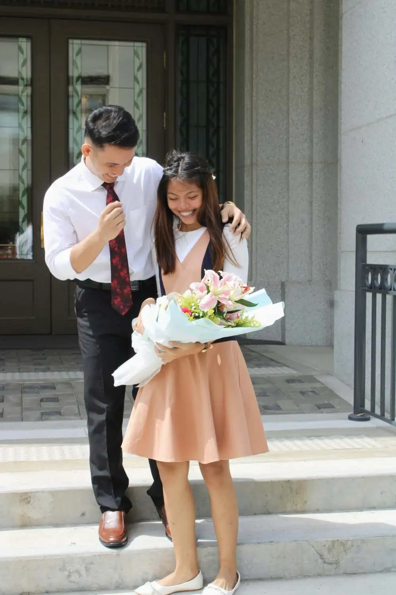

Jethro & Mae
Wedding Date & Information
When: April 09, 2027
Wedding Ceremony: Manila Philippines Temple
Wedding Reception: Nasugbu Chapel
Love Story of the Couple
Jethro and Mae first met each other as Elder Apayart and Sister Ambao in the Philippines Angeles Mission year 2022. They served in the same zone twice where they shared small conversations very often, played basketball, ate as a district every preparation day and district council meetings then somehow became friends. In short, there were no strings attached from their mission. Mae finished her mission in September 2023, while Jethro in December 2023.
Years after their mission they reconnected through a group chat made by their mission friends. In February 2025, Jethro asked for help in their group chat regarding BYU PathwayConnect then Mae offered help and what’s funny was she referred her friend to Jethro. After a few months, in May 2025 Jethro started to chat with Mae regarding basketball, NBA games and online games. From there on, there was no skipped chat, and video calls every single day. Jethro confessed his feelings and asked Mae if he could court her. Then, he visited Mae and her family in Batangas. On September 6, 2025, in the Manila Philippines Temple they became officially together. And their LDR phase began.
On September 3, 2026, behind the temple doors of Alabang Philippines Temple there was a man who came out carrying a bouquet and ring box, and knelt in front of Mae and her family.
